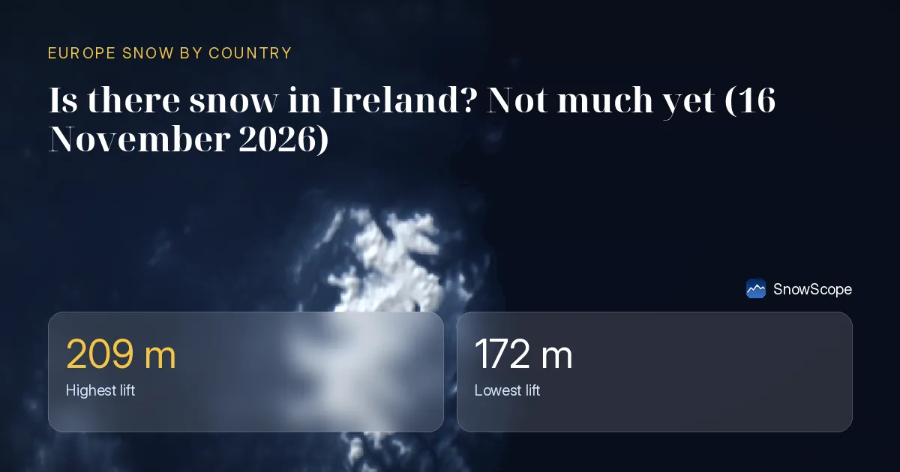

Is there snow in Ireland? Not much yet (16 November 2026)
There is hardly any snow in Ireland today: about 0 km² of white ground.
See the live snow forecast for Ski Club Of Ireland in the SnowScope appSnow depth, powder alerts and the 3D map, free.
Snow on the way?
The week ahead looks dry for the mountains.
| Resort | Snow depth | New snow, 72 h | Coming, next days | Top |
|---|---|---|---|---|
| Ski Club Of Ireland | 0 cm | 0 cm | 0 cm | 209 m |

Best resorts right now
The 1 resorts in Ireland on our map are still green.
Tips for skiers
- Check the resort's own lift status before you travel.
- Early-season snow is thin over rocks: ski the groomed runs first.
- Snow above the tree line can be wind-packed: watch the ridges.
About these numbers
Resort snow depths are the deepest snow on the resort's upper slopes from the SnowScope snow model (about 1 km, run of 16 November); they are estimates for an area, not a measurement at one point. Station values are measurements on the date shown. Forecasts can change. Always read the official avalanche bulletin before going off-piste.
Cite this report
For research, teaching or the press: the numbers and charts are free to reuse under CC BY 4.0 with this citation.
SnowScope (2026), Is there snow in Ireland? Not much yet (16 November 2026), https://snowscope.app/blog/en/2026/11/ireland-snow-report-16-november-2026.html, accessed 2026-11-16
SnowScope (Atlas Labs). (2026, November 16). Is there snow in Ireland? Not much yet (16 November 2026). SnowScope snow reports. https://snowscope.app/blog/en/2026/11/ireland-snow-report-16-november-2026.html
BibTeX
@misc{snowscope2026irelandsnowreport16novem,
author = {{SnowScope (Atlas Labs)}},
title = {Is there snow in Ireland? Not much yet (16 November 2026)},
year = {2026},
month = nov,
howpublished = {\url{https://snowscope.app/blog/en/2026/11/ireland-snow-report-16-november-2026.html}},
note = {Published 2026-11-16 20:42 UTC; accessed 2026-11-16}
}· CC BY 4.0 · Methods, data and tools →
Ski Club Of Ireland: snow and temperature by height, this winter vs last (tools) →
Follow Ski Club Of Ireland
Free: a message when fresh snow is coming, and the forecast every morning.
More snow reports

Compare Grandvalira and Spanish resorts in December 2026 for snow depths, lift heights, and prices starting from 49.00 EUR.

Above 1,500 m around Toubkal, the ground was white for 94 days in winter 2025-26, the most in 26 winters of satellite images. How low the snow came, when it left, and how this winter compares with 2008-09 and the dry years.

The two-week picture in the US West, 17 November to 30 November, drawn from the two global models that reach two weeks, ECMWF and GFS. Middle of the …